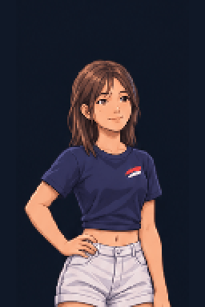
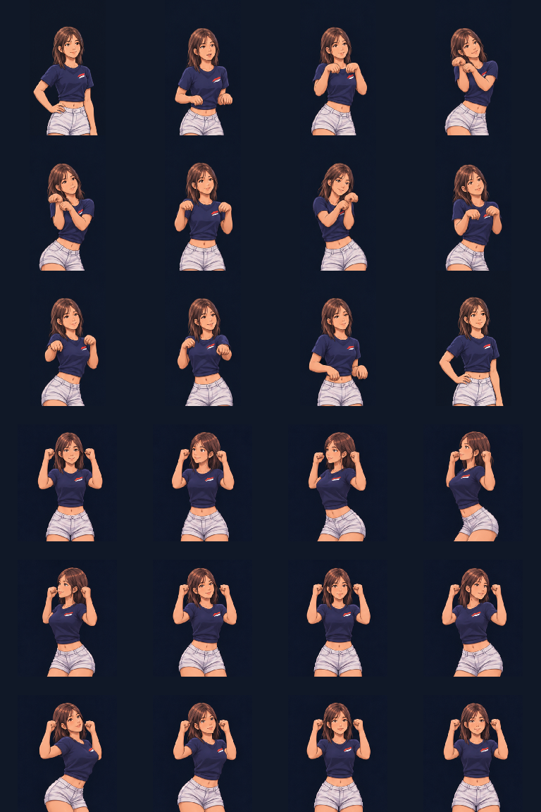

Nao — closed fists, upright forearms
Corrected choreography · torso accents left / right · animation study
Native pixels · 192 × 192
Both fists stay closed near the temples. The forearms stay upright, with elbows bent. The elbows draw back slightly as the torso accents forward-left, returns through center, then repeats forward-right. No open palms or extended arms.
The new motion replaces the rejected open-arm version. The cat-paw dance remains intact. This is a preview on a dark background, not a level-2 game integration.
Previous approved choreography

All key poses

Movement references
The user's fourth screenshot shows closed fists beside the head with bent elbows and upright forearms. The Muscle Man arm position provides a corresponding cheer vocabulary reference. This identifies the arm posture, not the exact named dance. The left/right torso accents follow the user's correction.